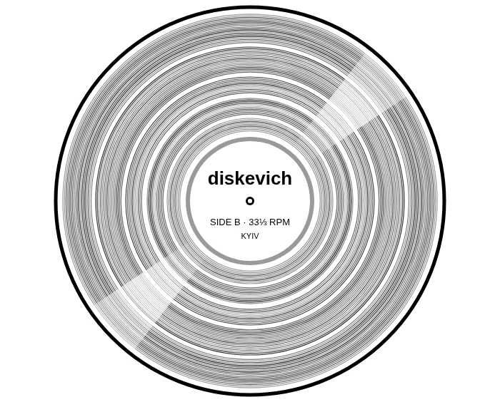

DJselector & record collectorKyiv, Ukraine
diskevich.
Golden-era tech house, chuggy house and obscure dancefloor digs, shaped by 90s US house, Detroit techno and minimal house.
Mixes forTruancy · Nugs On Board · X-Kalay · Breathe Records · tresydos · LOWMONEYMUSICLOVE · Kalahari Oyster Cult

- Based in
- Kyiv
- Guest mixes
- 7
- SoundCloud plays
- 50K+
- Followers
- 2.1K
Listen
A recorded set and the three most played guest mixes. The YouTube and SoundCloud players load only when you press play.
Most played guest mixes
-
0127K plays
Nugs On Board
Nugcast #19
-
025.4K plays
tresydos
018
-
035.1K plays
LOWMONEYMUSICLOVE
LOWMONEYMUSICMIX 37
More guest mixes
No dates announced right now — booking is open.
Past gigs
What they say
“When it comes to unearthing some of the most obscure dancefloor heaters in the world, diskevich is one of the hardest-working DJs in music right now.”
— Truants ↗“One of the best Ukrainian selectors.”
— Nugs On Board ↗
Press kit
Short bio
Long bio
BPM:
Press photos
Free to use for promoting diskevich's gigs and mixes. Credit: Denys Dinkevych. All five are in the .zip too.


Interviews & features
Rider
@__diskevich
Digs, gigs and the rest of the night shift.
Booking & promo
Club nights, guest mixes, podcasts — send the date, the city and the room.